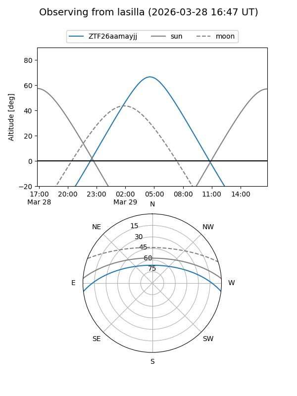
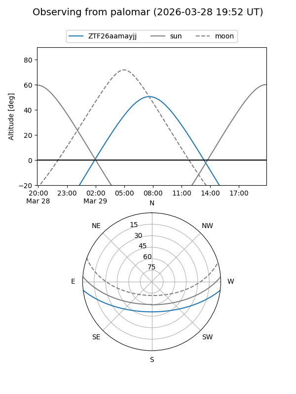

ZTF26aamayjj
Target ZTF26aamayjj at 2026-03-29 09:46
Aliases and brokers:
FINK: link
Lasair: link
ALeRCE: link
alt names
ZTF26aamayjj (ztf,fink_ztf)
Coordinates:
equatorial (ra, dec) = 183.8989,-5.84028
equatorial (HMS+DMS) = 12:15:35.75,-05:50:24.99
galactic (l, b) = (286.8835,+55.91064)
Flags:
Photometry:
last ztfg=17.34
1 ztfg detections
Lightcurve
Visibility


Additional plots